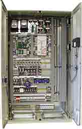

The
Electronic Wind Turbine Controller

 The wind turbine controller consists of a
number of computers which continuously monitor the condition
of the wind turbine and collect statistics on its operation.
As the name implies, the controller also controls a large number
of switches, hydraulic pumps, valves, and motors within the wind
turbine.
The wind turbine controller consists of a
number of computers which continuously monitor the condition
of the wind turbine and collect statistics on its operation.
As the name implies, the controller also controls a large number
of switches, hydraulic pumps, valves, and motors within the wind
turbine.
 As wind turbine sizes increase to megawatt
machines, it becomes even more important that they have a high
availability rate, i.e. that they function reliably all the time.
As wind turbine sizes increase to megawatt
machines, it becomes even more important that they have a high
availability rate, i.e. that they function reliably all the time.
Communicating
with the Outside World
The controller communicates with the owner or operator of the
wind turbine via a communications link, e.g. sending alarms or
requests for service over the telephone or a radio link. It is
also possible to call the wind turbine to collect statistics,
and check its present status. In wind parks one of the turbines
will usually be equipped with a PC from which it is possible
to control and collect data from the rest of the wind turbines
in the park. This PC can be called over a telephone line or a
radio link.
Internal
Communications

 There
is usually a controller both at the bottom of the tower and in
the nacelle. On recent wind turbine models, the communication
between the controllers is usually done using fibre optics. The
image to the right shows a fibre optics communications unit.
On some recent models, there is a third controller placed in
the hub of the rotor. That unit usually communicates with the
nacelle unit using serial communications through a cable connected
with slip rings and brushes on the main shaft.
There
is usually a controller both at the bottom of the tower and in
the nacelle. On recent wind turbine models, the communication
between the controllers is usually done using fibre optics. The
image to the right shows a fibre optics communications unit.
On some recent models, there is a third controller placed in
the hub of the rotor. That unit usually communicates with the
nacelle unit using serial communications through a cable connected
with slip rings and brushes on the main shaft.
Fail
Safe Mechanisms and Redundancy
Computers and sensors are usually duplicated (redundant) in all
safety or operation sensitive areas of newer, large machines.
The controller continuously compares the readings from measurements
throughout the wind turbine to ensure that both the sensors and
the computers themselves are OK. The picture at the top of the
page shows the controller of a megawatt machine, and has two
central computers. (We removed the cover on one of the two computers
to show the electronics).
What
is Monitored?
It is possible to monitor or set somewhere between
100 and 500 parameter values in a modern wind turbine. The controller
may e.g. check the rotational speed of the rotor, the generator,
its voltage and current. In addition, lightning strikes and their
charge may be registered. Furthermore measurements may be made
of of outside air temperature, temperature in the electronic
cabinets, oil temperature in the gearbox, the temperature of
the generator windings, the temperature in the gearbox bearings,
hydraulic pressure, the pitch angle of each rotor blade (for
pitch controlled or active stall controlled machines), the yaw
angle (by counting the number of teeth on yaw wheel), the number
of power cable twists, wind direction, wind speed from the anemometer,
the size and frequency of vibrations in the nacelle and the rotor
blades, the thickness of the brake linings, whether the tower
door is open or closed (alarm system).
Control
Strategies
Many of the business secrets of the wind turbine manufacturers
are to be found in the way the controller interacts with the
wind turbine components. Improved control strategies are responsible
for an important part of the increase in wind turbine productivity
in recent years.
 An interesting strategy pursued by some manufacturers
is to adapt the operational strategy to the local wind climate.
In this way it may e.g. be possible to minimise uneconomic tear
and wear on the machine during (rare) periods of rough weather.
An interesting strategy pursued by some manufacturers
is to adapt the operational strategy to the local wind climate.
In this way it may e.g. be possible to minimise uneconomic tear
and wear on the machine during (rare) periods of rough weather.
© Copyright 2000 Soren Krohn. All rights reserved.
Updated 6 August 2000
http://www.windpower.org/tour/wtrb/control.htm